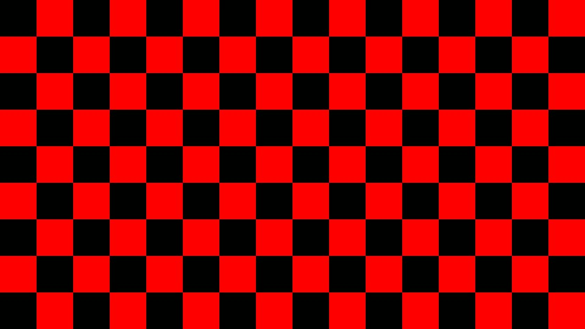

前言
Tsoding 的观点非常直白：如果你想做的只是把像素画到屏幕上，你根本不需要任何图形 API。CPU 可以直接计算出每个像素的颜色，然后以一种最简单的图像格式（比如 PPM）保存下来，再用任何图片查看器打开即可。
这就是“用 CPU 跑 Shader”的最原始形态：没有 GPU，没有着色器语言，只有 for 循环和 fputc。
PPM 格式：比 TXT 还简单的图像格式
- P6（二进制）：直接写入每个像素的 RGB 字节，文件更小，也更容易用代码生成。
我们要用的就是 P6 二进制格式。它的头部只有三行：P6、宽度 高度、255。
紧接着就是 宽度 × 高度 × 3 个字节，按 R, G, B, R, G, B, ... 顺序排列。
纯红色的 PPM
代码展示
#include <stdio.h>
int main()
{
FILE *f = fopen("output.ppm", "wb");
int w = 16 * 60; // 960
int h = 9 * 60; // 540
// PPM 头部（P6 二进制格式）
fprintf(f, "P6\n");
fprintf(f, "%d %d\n", w, h);
fprintf(f, "255\n");
// 像素数据：全部写成 R=255, G=0, B=0
for (int i = 0; i < h; i++) {
for (int j = 0; j < w; j++) {
fputc(0xFF, f); // R
fputc(0x00, f); // G
fputc(0x00, f); // B
}
}
fclose(f);
return 0;
}编译
g++ ppm.c -o ppm.exe
.\ppm.exe运行之后会生成一个ppm文件，我用ffmpeg转成了jpg格式
ffmpeg -i output.ppm -pix_fmt yuvj420p output.jpg只是一个纯红色的无聊图案（？
一个棋盘格
当然我们可以通过判断当前索引是奇数还是偶数，决定当前像素的颜色
if((i/60+j/60)%2){
fputc(0xFF,f);
fputc(0x00,f);
fputc(0x00,f);
}else{
fputc(0x00,f);
fputc(0x00,f);
fputc(0x00,f);
}这样就可以得到一个黑红相间的棋盘格

一个棋盘格视频
我们还可以让棋盘格移动，只需要做这样的修改
if(((i+10)/60+(j+10)/60)%2)编译运行之后的棋盘格就会在X和Y方向偏移
然后，我们可以重复60次，将上述过程从0-60进行迭代，每一次迭代我们都创建一个单独的帧文件，共生成60个，代码如下
#include<stdio.h>
int main()
{
char buf[256]; //在栈上分配生成的帧文件名
for(int k=0;k<60;k++){
snprintf(buf,sizeof(buf),"output-%02d.ppm",k);
const char *output_path=buf;
FILE *f=fopen(output_path,"wb");
int w=16*60;
int h=9*60;
fprintf(f,"P6\n");
fprintf(f,"%d %d\n",w,h);
fprintf(f,"255\n");
for(int i=0;i<h;i++){
for(int j=0;j<w;j++){
if(((i+k)/60+(j+k)/60)%2){
fputc(0xFF,f);
fputc(0x00,f);
fputc(0x00,f);
}else{
fputc(0x00,f);
fputc(0x00,f);
fputc(0x00,f);
}
}
}
fclose(f);
printf("Generated %s\n",output_path);
}
return 0;
}然后在终端进行编译
ffmpeg -framerate 30 -i output-%02d.ppm -c:v libx264 -pix_fmt yuv420p output.mp4即可看见视频
纯红色到任意“CPU Shader”
生成纯红色当然没什么用，但你可以替换内层循环里的 fputc逻辑——比如根据 (i, j) 坐标计算渐变色、画圆、画棋盘格，甚至实现分形、噪声、光线步进（Ray Marching）……所有这些都不需要任何图形 API，纯粹是 CPU 上对每个像素执行一个数学函数。
同时更进一步的，如果要动画，可以在外层再加一维时间 t，每帧生成一个 PPM，然后用 FFmpeg 合成视频。
以上本人因时间问题还未实现（挖坑中）